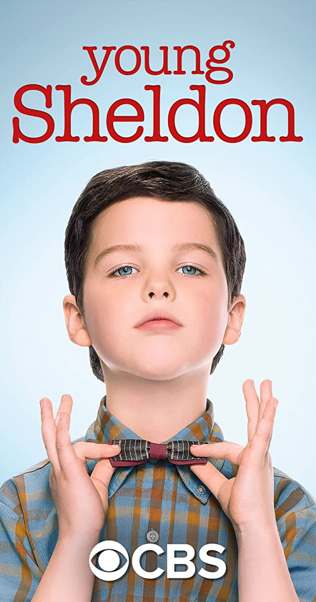

Young Sheldon 영쉘든
Young Sheldon is an American comedy television series on CBS created by Chuck Lorre and Steven Molaro. The series is a spin-off prequel to The Big Bang Theory and begins with the character Sheldon Cooper at the age of nine, living with his family in East Texas and going to high school. Iain Armitage stars as young Sheldon, alongside Zoe Perry, Lance Barber, Montana Jordan, Raegan Revord, and Annie Potts. Jim Parsons, who portrays the adult Sheldon Cooper on The Big Bang Theory, narrates the series and serves as an executive producer.
Development of the prequel series began in November 2016, from an initial idea that Parsons passed along to The Big Bang Theory producers. The following March, Armitage and Perry were cast, and the series was ordered by CBS. The series premiered as a special preview on September 25, 2017, and two days later, CBS picked up the series for a full season of 22 episodes. From November 2, 2017, new episodes began airing weekly. In January 2018, CBS renewed the series for a second season which premiered on September 24, 2018, and in February 2019, for a third and fourth season, with the third season having premiered on September 26, 2019.
더 자세한 내용은 클릭